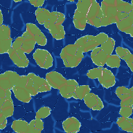
Сид 0 · научный режим

Сид 0 · геймплейный режим

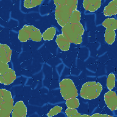
Сид 1 · научный режим

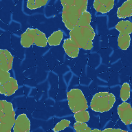
Сид 1 · геймплейный режим

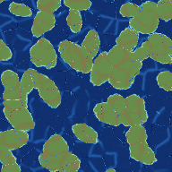
Сид 2 · научный режим

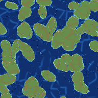
Сид 2 · геймплейный режим

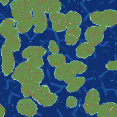
Сид 7 · научный режим

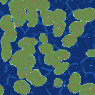
Сид 7 · геймплейный режим

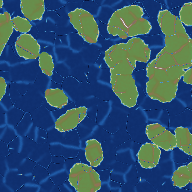
Сид 42 · научный режим

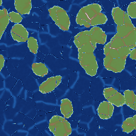
Сид 42 · геймплейный режим

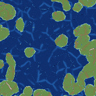
Сид 123 · научный режим

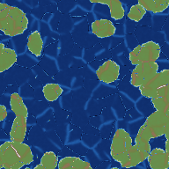
Сид 123 · геймплейный режим

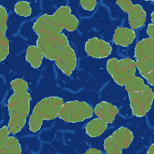
Сид 777 · научный режим

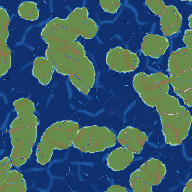
Сид 777 · геймплейный режим

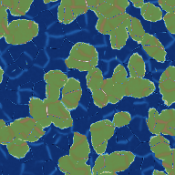
Сид 1234 · научный режим

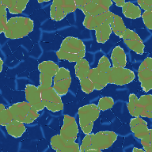
Сид 1234 · геймплейный режим

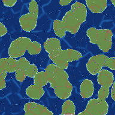
Сид 2024 · научный режим

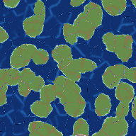
Сид 2024 · геймплейный режим

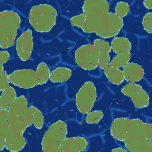
Сид 12345 · научный режим

Сид 12345 · геймплейный режим

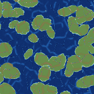
Сид 54321 · научный режим

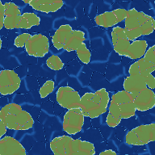
Сид 54321 · геймплейный режим

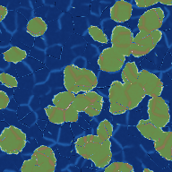
Сид 99999 · научный режим

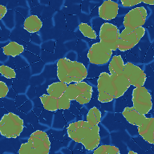
Сид 99999 · геймплейный режим

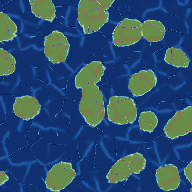
Сид -1 · научный режим

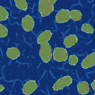
Сид -1 · геймплейный режим

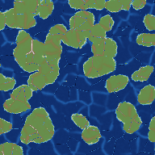
Сид -42 · научный режим

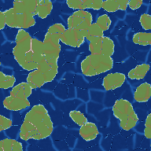
Сид -42 · геймплейный режим

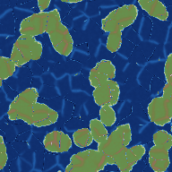
Сид -123456789 · научный режим

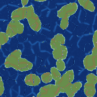
Сид -123456789 · геймплейный режим

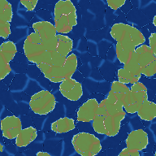
Сид 987654321 · научный режим

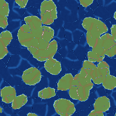
Сид 987654321 · геймплейный режим